(一） MySQL主从复制
1.新建主从服务器容器实例3307
1
2
3
4
5
6
7
| #实战版启动
docker run -p 3307:3306 --name mysql-master \
-v /mydata/mysql-master/log:/var/log/mysql \
-v /mydata/mysql-master/data:/var/lib/mysql \
-v /mydata/mysql-master/conf:/etc/mysql \
-e MYSQL_ROOT_PASSWORD=root \
-d mysql:5.7
|
2.进入/mydata/mysql-master/conf 目录下新建 my.cnf
vim my.cnf
1
2
3
4
5
6
7
8
9
10
11
12
13
14
15
16
| [mysqld]
## 设置 server_id，同一局域网中需要唯一
server_id=101
## 指定不需要同步的数据库名称
binlog-ignore-db=mysql
## 开启二进制日志功能
log-bin=mall-mysql-bin
## 设置二进制日志使用内存大小（事务）116
binlog_cache_size=1M
## 设置使用的二进制日志格式（mixed,statement,row）
binlog_format=mixed
## 二进制日志过期清理时间。默认值为 0，表示不自动清理。
expire_logs_days=7
## 跳过主从复制中遇到的所有错误或指定类型的错误，避免 slave 端复制中断。
## 如：1062 错误是指一些主键重复，1032 错误是因为主从数据库数据不一致
slave_skip_errors=1062
|
3.修改完配置后重启 master 实例
1
| docker restart mysql-master
|
4.进入 mysql-master 容器
1
2
| docker exec -it mysql-master /bin/bash
mysql -uroot -proot
|
5.master 容器实例内创建数据同步用户
1
2
3
| #新建的用户
CREATE USER 'slave'@'%' IDENTIFIED BY '123456';
GRANT REPLICATION SLAVE, REPLICATION CLIENT ON *.* TO 'slave'@'%';
|
6.新建从服务器容器实例 3308
1
2
3
4
5
6
| docker run -p 3308:3306 --name mysql-slave \
-v /mydata/mysql-slave/log:/var/log/mysql \
-v /mydata/mysql-slave/data:/var/lib/mysql \
-v /mydata/mysql-slave/conf:/etc/mysql \
-e MYSQL_ROOT_PASSWORD=root \
-d mysql:5.7
|
7.进入/mydata/mysql-slave/conf 目录下新建 my.cnf
vim my.cnf
1
2
3
4
5
6
7
8
9
10
11
12
13
14
15
16
17
18
19
20
21
22
| [mysqld]
## 设置 server_id，同一局域网中需要唯一
server_id=102
## 指定不需要同步的数据库名称
binlog-ignore-db=mysql
## 开启二进制日志功能，以备 Slave 作为其它数据库实例的 Master 时使用
log-bin=mall-mysql-slave1-bin
## 设置二进制日志使用内存大小（事务）
binlog_cache_size=1M
## 设置使用的二进制日志格式（mixed,statement,row）
binlog_format=mixed
## 二进制日志过期清理时间。默认值为 0，表示不自动清理。
expire_logs_days=7
## 跳过主从复制中遇到的所有错误或指定类型的错误，避免 slave 端复制中断。
## 如：1062 错误是指一些主键重复，1032 错误是因为主从数据库数据不一致
slave_skip_errors=1062
## relay_log 配置中继日志
relay_log=mall-mysql-relay-bin
## log_slave_updates 表示 slave 将复制事件写进自己的二进制日志
log_slave_updates=1
## slave 设置为只读（具有 super 权限的用户除外）
read_only=1
|
8.修改完配置后重启 master 实例
1
| docker restart mysql-slave
|
9.在主数据库中查看主从同步状态
10.进入 mysql-slave 容器
1
2
| docker exec -it mysql-slave /bin/bash
mysql -uroot -proot
|
11.在从数据库中配置主从复制
1
2
3
4
5
| change master to master_host='192.168.113.132',
master_user='slave',
master_password='123456', master_port=3307,
master_log_file='mall-mysql-bin.000001',
master_log_pos=617, master_connect_retry=30;
|
主从复制命令参数说明
master_host：主数据库的 IP 地址；
master_port：主数据库的运行端口；
master_user：在主数据库创建的用于同步数据的用户账号；
master_password：在主数据库创建的用于同步数据的用户密码；
master_log_file：指定从数据库要复制数据的日志文件，通过查看主数据的状态，获取 File 参数；
master_log_pos：指定从数据库从哪个位置开始复制数据，通过查看主数据的状态，获取 Position 参数；
master_connect_retry：连接失败重试的时间间隔，单位为秒。
12.在从数据库中查看主从同步状态
1
2
| show slave status \G;
show master status \G;
|
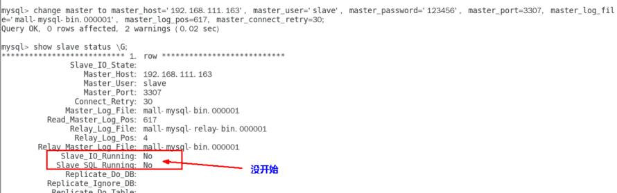
13.在从数据库中开启主从同步
14.查看从数据库状态发现已经同步
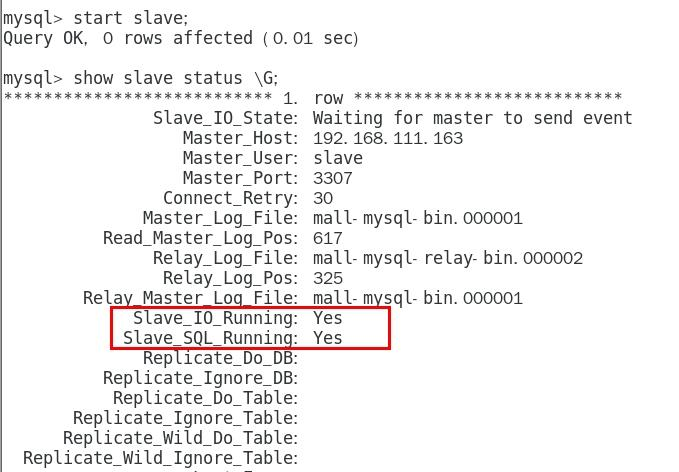
15.主从复制测试
1
2
3
4
5
6
| #主数据库
create database db01;
show databases;
#从数据库
show databases;
|
可以发现两边都有db01 则完成搭配；
(二) 安装 redis 集群
分布式算法
- 哈希取余算法
- 一致性哈希算法
- 哈希槽分区
Redis 集群中内置了 16384 个哈希槽
3 主 3 从 redis 集群扩缩容配置案例架构说明
192.168.113.133 #当前ip
1.关闭防火墙+启动 docker 后台服务
2.新建 6 个 docker 容器 redis 实例 6381-6386
1
2
3
4
5
6
7
8
9
10
11
| docker run -d --name redis-node-1 --net host --privileged=true -v/data/redis/share/redis-node-1:/data redis:6.0.8 --cluster-enabled yes --appendonly yes --port 6381
docker run -d --name redis-node-2 --net host --privileged=true -v/data/redis/share/redis-node-2:/data redis:6.0.8 --cluster-enabled yes --appendonly yes --port 6382
docker run -d --name redis-node-3 --net host --privileged=true -v/data/redis/share/redis-node-3:/data redis:6.0.8 --cluster-enabled yes --appendonly yes --port 6383
docker run -d --name redis-node-4 --net host --privileged=true -v/data/redis/share/redis-node-4:/data redis:6.0.8 --cluster-enabled yes --appendonly yes --port 6384
docker run -d --name redis-node-5 --net host --privileged=true -v/data/redis/share/redis-node-5:/data redis:6.0.8 --cluster-enabled yes --appendonly yes --port 6385
docker run -d --name redis-node-6 --net host --privileged=true -v/data/redis/share/redis-node-6:/data redis:6.0.8 --cluster-enabled yes --appendonly yes --port 6386
|
3.进入容器 redis-node-1 并为 6 台机器构建集群关系
1
| docker exec -it redis-node-1 /bin/bash
|
构建主从关系
1
2
| #注意，进入 docker 容器后才能执行一下命令，且注意自己的真实 IP 地址
redis-cli --cluster create 192.168.113.133:6381 192.168.113.133:6382 192.168.113.133:6383 192.168.113.133:6384 192.168.113.133:6385 192.168.113.133:6386 --cluster-replicas 1
|
—cluster-replicas 1 表示为每个 master 创建一个slave 节点
结果
1
2
3
4
5
6
7
8
9
10
11
12
13
14
15
16
17
18
19
20
21
22
| >>> Performing hash slots allocation on 6 nodes...
Master[0] -> Slots 0 - 5460
Master[1] -> Slots 5461 - 10922
Master[2] -> Slots 10923 - 16383
Adding replica 192.168.113.133:6385 to 192.168.113.133:6381
Adding replica 192.168.113.133:6386 to 192.168.113.133:6382
Adding replica 192.168.113.133:6384 to 192.168.113.133:6383
>>> Trying to optimize slaves allocation for anti-affinity
[WARNING] Some slaves are in the same host as their master
M: 9fd51f967f366ec1004f2eeb9c20a6fddc23dd7f 192.168.113.133:6381
slots:[0-5460] (5461 slots) master
M: c4b2d4fc07d71c7f7a987e540172e80043218fe1 192.168.113.133:6382
slots:[5461-10922] (5462 slots) master
M: 53d3fceb6878f37751c5b8b8a62f1718fd0026f9 192.168.113.133:6383
slots:[10923-16383] (5461 slots) master
S: 8d5845a7ee977850158e479f66301c6c5aad04e9 192.168.113.133:6384
replicates 9fd51f967f366ec1004f2eeb9c20a6fddc23dd7f
S: 98d7a8627a1e89949127596de339325df2923e9f 192.168.113.133:6385
replicates c4b2d4fc07d71c7f7a987e540172e80043218fe1
S: dd9a8b9c99ec0192c5a2c78d6c86907e9d31fbdc 192.168.113.133:6386
replicates 53d3fceb6878f37751c5b8b8a62f1718fd0026f9
Can I set the above configuration? (type 'yes' to accept):
|
输入yes完成
4.链接进入 6381 作为切入点，查看集群状态
链接进入 6381 作为切入点，查看节点状态
1
2
3
| redis-cli -p 6381
cluster info
cluster nodes
|
主从容错切换迁移案例
数据读写存储
进入一台主机
1
| docker exec -it redis-node-1 /bin/bash
|
加入-c参数集群方式连接.可以设置kv
之后就可以使用集群
查看集群信息
1
| redis-cli --cluster check 192.168.113.133:6381
|
主 6381 和从机切换，先停止主机 6381
主6381停止后，重启后变为从机，6384变为主机
想要6381变为主机，则应停止6384，后重启6384
主从扩容
1. 新建 6387、6388 两个节点+新建后启动
1
2
3
4
5
| docker run -d --name redis-node-7 --net host --privileged=true -v/data/redis/share/redis-node-7:/data redis:6.0.8 --cluster-enabled yes --appendonly yes --port 6387
docker run -d --name redis-node-8 --net host --privileged=true -v /data/redis/share/redis-node-8:/data redis:6.0.8 --cluster-enabled yes --appendonly yes --port 6388
docker ps
|
2.进入 6387 容器实例内部
1
| docker exec -it redis-node-7 /bin/bash
|
3.将新增的 6387 节点(空槽号)作为 master 节点加入原集群
1
2
| #redis-cli --cluster add-node 自己实际IP地址:6387 自己实际IP地址:6381
redis-cli --cluster add-node 192.168.113.133:6387 192.168.113.133:6381
|
6387 就是将要作为master新增节点
6381 就是原来集群节点里面的领路人，相当于6387拜拜6381的码头从而找到组织加入集群
查看集群信息
1
| redis-cli --cluster check 192.168.113.133:6381
|
发现6387没有分配
4.重新分派槽号
1
2
3
4
5
6
7
8
9
10
11
| #命令:redis-cli --cluster reshard IP地址:端口号
redis-cli --cluster reshard 192.168.113.133:6381
#How many slots do you want to move (from 1 to 16384)?
#填入16384/4=4096
#what is the receiving node ID?
#6387对应的id b48f64116c034c2e4f8882cb450e08333552d497
#输入all
yes
|
查看集群信息
1
| redis-cli --cluster check 192.168.113.133:6381
|
为什么6387是3个新的区间，以前的还是连续？
重新分配成本太高，所以前3家各自匀出来一部分，从6381/6382/6383三个旧节点分别匀出1364个坑位给新节点6387
5.为主节点6387分配从节点6388
1
2
3
4
| #命令：redis-cli --cluster add-node ip:新slave端口 ip:新master端口 --cluster-slave --cluster-master-id 新主机节点ID
redis-cli --cluster add-node 192.168.113.133:6388 192.168.113.133:6387 --cluster-slave --cluster-master-id b48f64116c034c2e4f8882cb450e08333552d497
#最后的id-------这个是6387的编号，按照自己实际情况
|
查看集群信息后发现完成需求
主从缩容
目的：将master 6387和slaver 6388下线
1.检查6388的节点id
查看集群信息
1
| redis-cli --cluster check 192.168.113.133:6381
|
2.将 6388 删除 从集群中将 4 号从节点 6388 删除
1
2
| #命令：redis-cli --cluster del-node ip:从机端口 从机6388节点ID
redis-cli --cluster del-node 192.168.113.133:6388 de2c20f6f71299a4105e4762b5b6a3c353b8a95c
|
检查一下发现，6388 被删除了，只剩下 7 台机器了。
3.将 6387 的槽号清空，重新分配，本例将清出来的槽号都给 6381
1
2
3
4
5
6
7
8
9
10
| redis-cli --cluster reshard 192.168.113.133:6381
#How many slots do you want to move (from 1 to 16384)? 4096
#4096是6387的槽数量
#what is the receiving node ID? 9fd51f967f366ec1004f2eeb9c20a6fddc23dd7f
#source node #1: b48f64116c034c2e4f8882cb450e08333552d497
->done
->yes
|
4096 个槽位都指给 6381，它变成了 8192 个槽位，相当于全部都给 6381 了，不然要输入 3 次，一锅端
查看集群信息
1
| redis-cli --cluster check 192.168.113.133:6381
|
4.将 6387 删除
1
2
3
| 命令：redis-cli --cluster del-node ip:端口 6387节点ID
redis-cli --cluster del-node 192.168.113.133:6387 b48f64116c034c2e4f8882cb450e08333552d497
|
查看集群信息
发现已经完成done
（三） DockerFile微服务
Dockerfile 是用来构建 Docker 镜像的文本文件，是由一条条构建镜像所需的指令和参数构成的脚本。
常用保留字
FROM
基础镜像，当前新镜像是基于哪个镜像的，指定一个已经存在的镜像作为模板，第一条必须是 from
MAINTAINER
镜像维护者的姓名和邮箱地址
RUN
容器构建时需要运行的命令
1
2
3
4
5
6
7
| #两种格式
#shell 格式
RUN yum -y install vim
#exec 格式
#RUN 是在 docker build 时运行
|
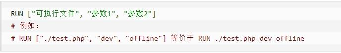
EXPOSE
当前容器对外暴露出的端口
WORKDIR
指定在创建容器后，终端默认登陆的进来工作目录，一个落脚点
USER
指定该镜像以什么样的用户去执行，如果都不指定，默认是 root
ENV
用来在构建镜像过程中设置环境变量
ADD
将宿主机目录下的文件拷贝进镜像且会自动处理 URL 和解压 tar 压缩包
COPY
类似 ADD，拷贝文件和目录到镜像中。 将从构建上下文目录中 <源路径> 的文件/目录复制到新的一层的镜像内的 <目标路径> 位置
VOLUME
容器数据卷，用于数据保存和持久化工作
CMD
指定容器启动后的要干的事情
docker run后面的参数会覆盖此命令里面的内容
它和前面 RUN 命令的区别
• CMD 是在 docker run 时运行。
• RUN 是在 docker build 时运行。
ENTRYPOINT
也是用来指定一个容器启动时要运行的命令
类似于 CMD 指令，但是 ENTRYPOINT 不会被 docker run 后面的命令覆盖，
而且这些命令行参数会被当作参数送给 ENTRYPOINT 指令指定的程序
案例-自定义镜像 mycentosjava8
要求
Centos7 镜像具备 vim+ifconfig+jdk8
JDK 的下载镜像地址
1
2
| https://www.oracle.com/java/technologies/downloads/#java8
https://mirrors.yangxingzhen.com/jdk/
|
准备编写 Dockerfile 文件
1
2
3
4
5
6
7
8
9
10
11
12
13
14
15
16
17
18
19
20
21
22
23
24
25
26
27
28
29
| FROM centos
MAINTAINER xd<xd@126.com>
ENV MYPATH /usr/local
WORKDIR $MYPATH
RUN cd /etc/yum.repos.d/
RUN sed -i 's/mirrorlist/#mirrorlist/g' /etc/yum.repos.d/CentOS-*
RUN sed -i 's|#baseurl=http://mirror.centos.org|baseurl=http://vault.centos.org|g' /etc/yum.repos.d/CentOS-*
RUN curl -o /etc/yum.repos.d/CentOS-Base.repo http://mirrors.cloud.tencent.com/repo/centos8_base.repo
RUN yum clean all && yum makecache
RUN yum -y install vim
RUN yum -y install net-tools
RUN yum -y install glibc.i686
RUN mkdir /usr/local/java
ADD jdk-8u192-linux-x64.tar.gz /usr/local/java/
ENV JAVA_HOME /usr/local/java/jdk1.8.0_192
ENV JRE_HOME $JAVA_HOME/jre
ENV CLASSPATH $JAVA_HOME/lib/dt.jar:$JAVA_HOME/lib/tools.jar:$JRE_HOME/lib:$CLASSPATH
ENV PATH $JAVA_HOME/bin:$PATH
EXPOSE 80
CMD echo $MYPATH
CMD echo "success--------------ok"
CMD /bin/bash
|
构建
1
2
| #docker build -t 新镜像名字:TAG .
docker build -t centosjava8:1.5 .
|
问题解决：Failed to download metadata for repo ‘appstream‘: Cannot prepare internal mirrorlist:… - 腾讯云开发者社区-腾讯云 (tencent.com)
1
2
3
4
5
6
| #mv /etc/yum.repos.d/CentOS-Base.repo /etc/yum.repos.d/CentOS-Base.repo.backup
curl -o /etc/yum.repos.d/CentOS-Base.repo https://mirrors.aliyun.com/repo/Centos-vault-8.5.2111.repo
yum clean all && yum makecache
curl -o /etc/yum.repos.d/CentOS-Base.repo http://mirrors.cloud.tencent.com/repo/centos8_base.repo
yum clean all && yum makecache
|
CentOS (tencent.com)
运行
1
| docker run -it 新镜像名字:TAG
|
虚悬镜像
1
2
3
4
5
| #查看
docker image ls -f dangling=true
#删除
docker image prune
|
Dockerfile
-ubuntu
1
2
3
4
5
6
7
8
9
10
11
12
| FROM ubuntu
MAINTAINER zzyy<zzyybs@126.com>
ENV MYPATH /usr/local
WORKDIR $MYPATH
RUN apt-get update
RUN apt-get install net-tools
EXPOSE 80
CMD echo $MYPATH
CMD echo "install inconfig cmd into ubuntu success--------------ok"
CMD /bin/bash
|
（四）微服务实战
（五）Docker网络
常用命令
创建网络
1
| docekr network create 网络名字
|
查看网络
查看网络源数据
1
| docker network inspect XXX 网络名字
|
删除网络
1
| docker network rm XXX 网络名字
|
能干嘛
• 容器间的互联和通信以及端口映射
• 容器 IP 变动时候可以通过服务名直接网络通信而不受到影响
网络模式
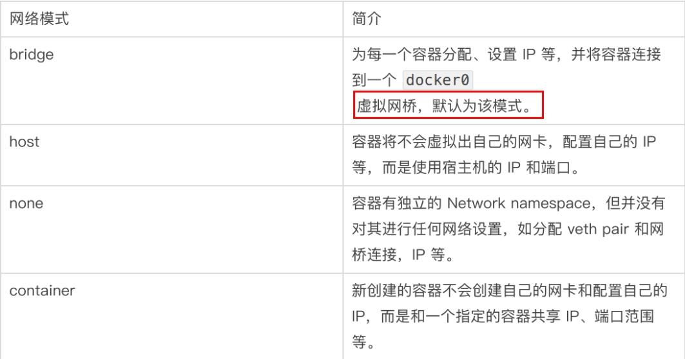
• bridge 模式：使用—network bridge 指定，默认使用 docker0
• host 模式：使用—network host 指定
• none 模式：使用—network none 指定
• container 模式：使用—network container:NAME 或者容器 ID 指定
docker 容器内部的 ip 是有可能会发生改变的
自定义网络
自定义网络本身就维护好了主机名和 ip 的对应关系（ip 和域名都能通）
案例
1
2
| docker run -d -p 8081:8080 --name tomcat81 billygoo/tomcat8-jdk8
docker run -d -p 8082:8080 --name tomcat82 billygoo/tomcat8-jdk8
|
互相可ping通，通过名字不可以ping通
新建自定义网络
1
| docker network create xd_network
|
新建容器加入上一步新建的自定义网络
1
2
| docker run -d -p 8081:8080 --network xd_network --name tomcat81 billygoo/tomcat8-jdk8
docker run -d -p 8082:8080 --network xd_network --name tomcat82 billygoo/tomcat8-jdk8
|
互相 ping 测试,可以ping通
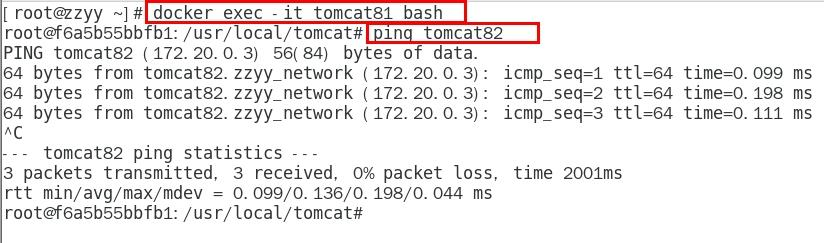
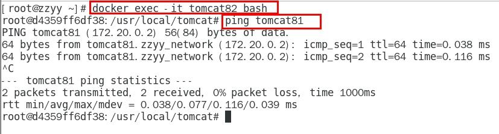
自定义网络本身就维护好了主机名和 ip 的对应关系（ip 和域名都能通）
推荐使用
（六）Docker-compose 容器编排
Docker-Compose 是 Docker 官方的开源项目， 负责实现对 Docker 容器集群的快速编排。
Compose 是 Docker 公司推出的一个工具软件，可以管理多个 Docker 容器组成一个应用。你需要定义一个 YAML 格式的配置文件 docker-compose.yml，写好多个容器之间的调用关系。然后，只要一个命令，就能同时启动/关闭这些容器
docker 建议我们每一个容器中只运行一个服务,因为docker 容器本身占用资源极少,所以最好是将每个服务单独的分割开来
Compose 允许用户通过一个单独的 dockercompose.yml 模板文件（YAML 格式）来定义一组相关联的应用容器为一个项目（project）。
网站
文档
Compose file version 3 reference | Docker Documentation
官网下载
Install Docker Compose | Docker Documentation
安装步骤
Install the plugin manually
1
2
3
4
5
6
7
| DOCKER_CONFIG=${DOCKER_CONFIG:-$HOME/.docker}
mkdir -p $DOCKER_CONFIG/cli-plugins
curl -SL https://github.com/docker/compose/releases/download/v2.11.2/docker-compose-linux-x86_64 -o $DOCKER_CONFIG/cli-plugins/docker-compose
chmod +x $DOCKER_CONFIG/cli-plugins/docker-compose
docker compose version
|
Install using the repository
Ubuntu, Debian:
1
2
| apt-get update
apt-get install docker-compose-plugin
|
RPM-based distros:
1
2
| sudo yum update
sudo yum install docker-compose-plugin
|
Verify that Docker Compose is installed correctly by checking the version.
卸载
Uninstall Docker Compose | Docker Documentation
常用命令
1
2
3
4
5
6
7
8
9
10
11
12
13
14
| docker-compose -h
docker-compose up
docker-compose up -d
docker-compose down
docker-compose exec yml里面的服务id
docker-compose exec docker-compose.yml 文件中写的服务id /bin/bash
docker-compose ps
docker-compose top
docker-compose logs yml里面的服务id
docker-compose config
docker-compose config -q
docker-compose restart
docker-compose start
docker-compose stop
|
使用 Compose
1.编写 docker-compose.yml 文件
1
2
3
4
5
6
7
8
9
10
11
12
13
14
15
16
17
18
19
20
21
22
23
24
25
26
27
28
29
30
31
32
33
34
35
36
37
38
39
40
41
42
43
| version: "3"
services:
microService:
image: zzyy_docker:1.6
container_name: ms01
ports:
- "6001:6001"
volumes:
- /app/microService:/data
networks:
- atguigu_net
depends_on:
- redis
- mysql
redis:
image: redis:6.0.8
ports:
- "6379:6379"
volumes:
- /app/redis/redis.conf:/etc/redis/redis.conf
- /app/redis/data:/data
networks:
- atguigu_net
command: redis-server /etc/redis/redis.conf
mysql:
image: mysql:5.7
environment:
MYSQL_ROOT_PASSWORD: '123456'
MYSQL_ALLOW_EMPTY_PASSWORD: 'no'
MYSQL_DATABASE: 'db2021'
MYSQL_USER: 'zzyy'
MYSQL_PASSWORD: 'zzyy123'
ports:
- "3306:3306"
volumes:
- /app/mysql/db:/var/lib/mysql
- /app/mysql/conf/my.cnf:/etc/my.cnf
- /app/mysql/init:/docker-entrypoint-initdb.d222
networks:
- atguigu_net
command: --default-authenticationplugin=mysql_native_password
networks:
atguigu_net:
|
编写 Dockerfile
构建镜像
• docker build -t zzyy_docker:1.6 .
执行 docker-compose up 或者 执行 docker-compose up -d
进入 mysql 容器实例并新建库 db2021+新建表 t_user
（七）Docker 轻量级可视化工具 Portainer
Portainer 是一款轻量级的应用，它提供了图形化界面，用于方便地管理 Docker 环境，包括单机环境和集群环境。
安装
官网
• https://www.portainer.io/
• https://docs.portainer.io/v/ce-2.9/start/install/server/docker/linux
步骤
docker 命令安装
1
| docker run -d -p 8000:8000 -p 9000:9000 --name portainer --restart=always -v /var/run/docker.sock:/var/run/docker.sock -v portainer_data:/data portainer/portainer
|
win
First, create the volume that Portainer Server will use to store its database. Using PowerShell:
1
2
| docker pull portainer/portainer
docker volume create portainer_data
|
Then, download and install the Portainer Server container:
1
| docker run -d -p 9000:9000 -v /var/run/docker.sock:/var/run/docker.sock --restart=always --name prtainer portainer/portainer
|
—restart=always表示docker重启之后，此容器也随之重启，可持续监控
第一次登录需创建 admin，访问地址：xxx.xxx.xxx.xxx:9000
用户名，直接用默认 admin 密码记得 8 位，随便你写
设置 admin 用户和密码后首次登陆
选择 local 选项卡后本地 docker 详细信息展示
（八）Docker 容器监控之 CAdvisor+InfluxDB+Granfana
docker stats 命令的结果
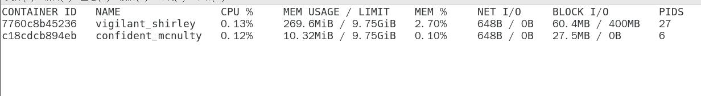
问题
通过 docker stats 命令可以很方便的看到当前宿主机上所有容器的 CPU,内存以及网络流量等数据，一般小公司够用了。。。。
但是，docker stats 统计结果只能是当前宿主机的全部容器，数据资料是实时的，没有地方存储、没有健康指标过线预警等功能
CAdvisor 监控收集+InfluxDB 存储数据+Granfana 展示图表
部署
compose 容器编排，一套带走
新建目录
1
2
| mkdir /mydocker/cig
cd /mydocker/cig
|
新建 3 件套组合的 docker-compose.yml
1
2
3
4
5
6
7
8
9
10
11
12
13
14
15
16
17
18
19
20
21
22
23
24
25
26
27
28
29
30
31
32
33
34
35
36
37
38
39
40
41
42
43
44
45
46
47
48
| version: "3.1"
volumes:
grafana_data: {}
services:
influxdb:
image: tutum/influxdb:0.9
container_name: ms01
restart: always
environment:
- PRE_CREATE_DB=cadvisor
ports:
- "8083:8083"
- "8086:8086"
volumes:
- ./data/influxdb:/data
cadvisor:
image: google/cadvisor
links:
- influxdb:influxsrv
command: -storage_driver=influxdb -storage_driver_db=cadvisor -storage_driver_host=influxsrv:8086
restart: always
ports:
- "8080:8080"
volumes:
- /:/rootfs:ro
- /var/run:/var/run:rw
- /sys:/sys:ro
- /var/lib/docker/:/var/lib/docker:ro
grafana:
user: "104"
image: grafana/grafana
user: "104"
restart: always
links:
- influxdb:influxsrv
ports:
- "3000:3000"
volumes:
- grafana_data:/var/lib/grafana
environment:
- HTTP_USER=admin
- HTTP_PASS=admin
- INFLUXDB_HOST=influxsrv
- INFLUXDB_PORT=8086
- INFLUXDB_NAME=cadvisor
- INFLUXDB_USER=root
- INFLUXDB_PASS=root
|
检查配置文件
1
| docker compose config -q
|
启动docker-compose文件
1
2
| docker-compose up -d
#docker compose up -d
|
测试和使用
浏览 cAdvisor 收集服务，http://ip:8080/
浏览 influxdb 存储服务，http://ip:8083/
浏览 grafana 展现服务，http://ip:3000，默认账号密码都是admin
配置grafana 展现服务
配置数据源
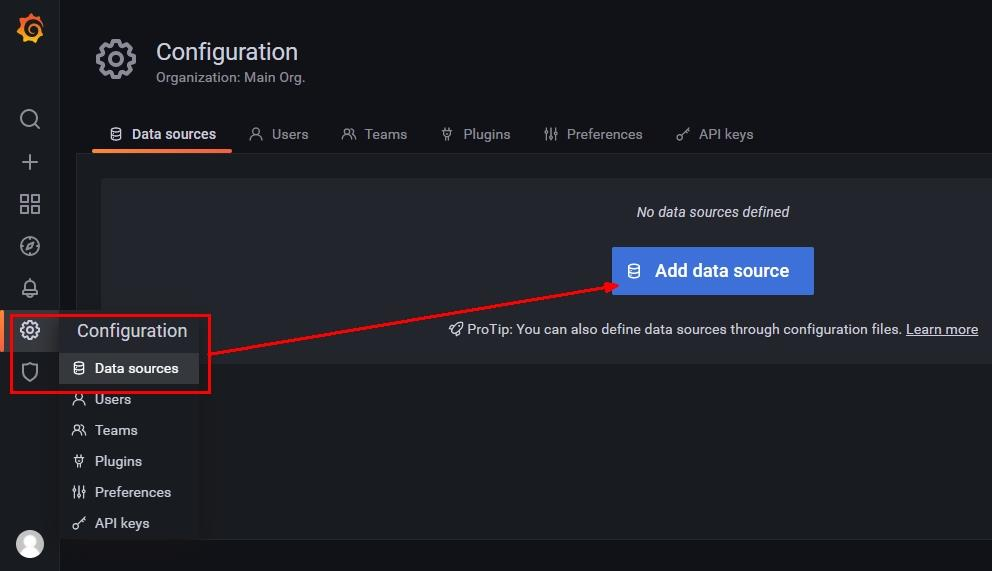
选择 influxdb 数据源
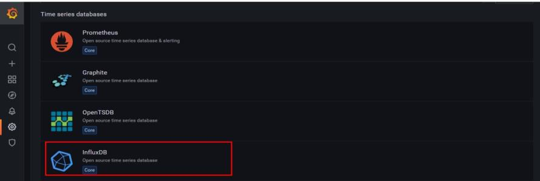
配置细节
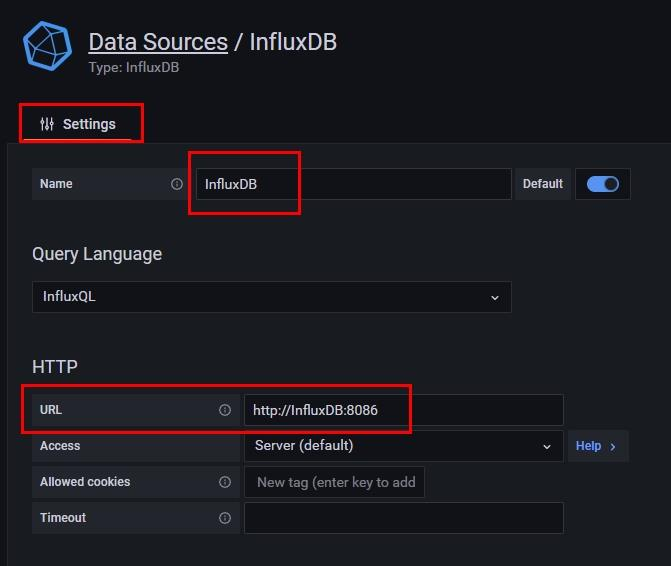
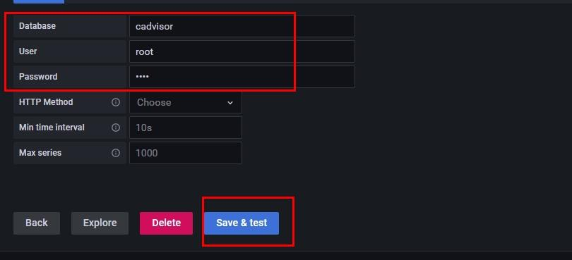
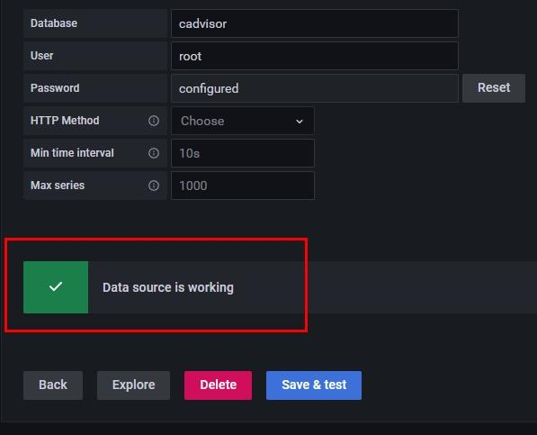
配置面板 panel
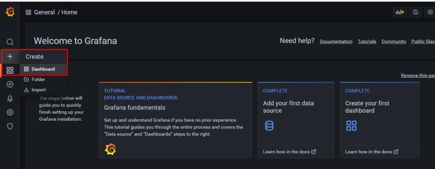
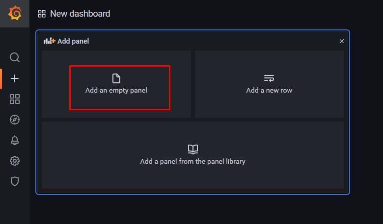
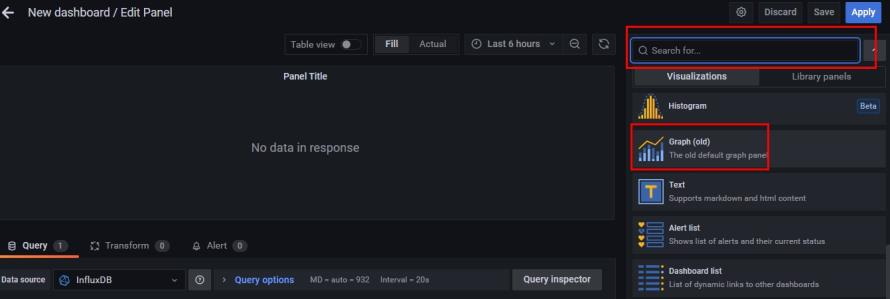
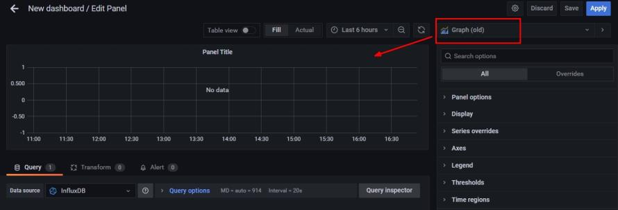
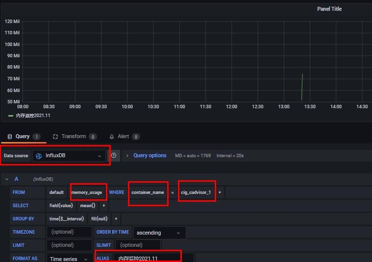
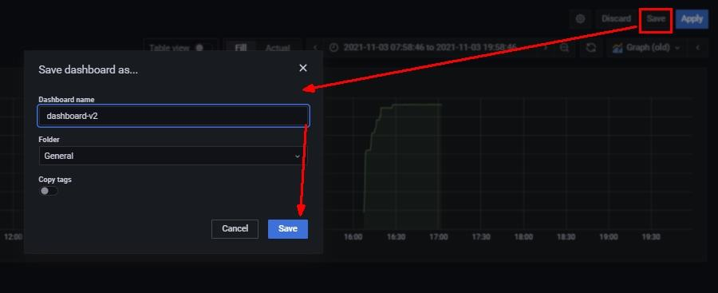
到这里 cAdvisor+InfluxDB+Grafana 容器监控系统就部署完成了